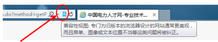
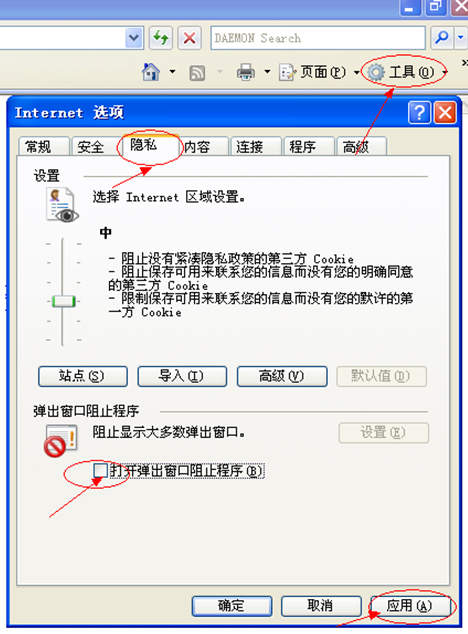

-
1.登录"申报系统"填报数据时，网页内容无法正常显示，应该如何处理？
答：是使用的"浏览器"的问题，建议使用的浏览器："微软IE6.0、微软IE7.0、微软IE8.0、微软IE9.0、360浏览器6"等， 禁止使用"傲游云浏览、火狐，360极速IE"等浏览器。
使用微软IE10或其它浏览器如果无法正常显示网页内容，则需按以下方法设置；如仍然无法正常显示，则建议改用上述推荐浏览器。
-
2.点击"网上交费"按钮没有反应，怎么办？
答：支付页面在弹出窗口中，说明此窗口被拦截，需关闭拦截弹出窗口工具。
首先，要注意调整你计算机里的IE属性，把弹窗禁止程序关闭，具体操作为：打开IE，在"工具"栏的"INTERNET选项"中点击"隐私"，再找到"打开弹出窗口阻止程序"，把前面的小勾取消， 然后点击"应用"，如下图：
-
3.支付宝如果交完费了，交费状态没有更改，应该如何处理？
答：支付宝扣款成功后，支付宝系统会向我们系统平台返回相应的数据，这些数据通常需要1-30分钟返回验证，如果用户当时使用的网络环境较差可能会延时。建议大家在确定交完费且扣款成功后，不要急于再次申请重新交费。即便没有交费也不影响后面的信息填报及资料上传。
刷新下，然后在点缴费，如果还是弹不出银行缴费页面，换个地方换台电脑再缴费吧。
-
4.信息录入完毕后，点击提交后，没有页面显示（显示为空白页）；或点击报表打印不能出现打印页。
答：请稍微等待，可能是网络速度原因引起；如果时间过长仍无法打开，请关闭IE浏览器，重新登陆申报系统，再次进行操作。
-
5.报表无法打印，或打印提示错误等。
答：这是由于IE浏览器安全设置过高引起的，请在IE菜单"工具"——"internet选项"——选择"安全"——"自定义级别"，将安全级别设置为低，并将ActiveX相关控件设置为"启用"或"提示"，然后进行打印。
另一种解决方法：
1）点击IE浏览器中的"文件"，选择"页面设置"，将"页眉"、"页脚"两项中的文字或者其他删除为空。
2）点击"文件－打印"，即可打印报表。
-
6.申报者修改填报信息。
答：修改填报信息前提：数据未"提交"。一旦数据提交至上级"申报单位"，申报者不能再修改信息，如确需修改，申报者需通过本单位人事部门向上级"申报单位"申请，申报单位人事部门通过系统将数据退回后申报者才可进行数据修改。
若数据已由"申报单位"提交至"省公司"，则需由"省公司"退回"申报单位"，再由"申报单位"退回个人，申报者才可再修改信息。
-
7.申报者修改"申报专业"。
答：数据"提交"前可修改。重新进入"网上报名"页面，在相关页面重新选择"申报专业"相关信息。
-
8.关于"申报单位"。
答："申报单位"关系到申报者的数据信息能否正确分配到相应单位数据库中，因此必须正确选择。若某"申报单位"数据库中缺少或多出了人员数据信息，均说明申报者选错了"申报单位"。申报者修改"申报单位"：数据"提交"前可修改。1）申报者可登陆"申报系统"，在"信息填报"界面的"基本情况"页面中重新选择；2）也可在"网上报名"相关页面中修改。
-
9."申报单位"或"省公司"数据库中"数据信息"与"上报纸质材料"数量不一致？
答：数据库中缺少或多出人员数据，说明申报者选错"申报单位"，此申报者数据被分配到其选择的申报单位的数据库中，此时，申报者选错的"申报单位"需将其数据退回个人，由申报者重新选择。
-
10.申报者"提交数据"前提。
答：1）个人"申报系统"检查数据填写符合要求；2）报名费交费状态为"已交费"状态。
-
11.申报者"打印报表"前提。
答：数据"提交"后，全部信息不能再修改，此时，才可打印各类报表。其中，"外语或计算机免试人员申请表"可在数据"提交"前打印。
-
12.申报者忘记"申报系统登陆密码"怎么办？
答：在"申报系统"登陆页面，点击"忘记密码？"连接，通过身份证号、密码保护问题及答案可重新设置新的登陆密码。
-
13.申报者如何修改"申报系统登陆密码"或"密码保护问题及答案"？
答：登陆"申报系统"后，在"系统首页"界面顶端，点击"更改密码"或"更改密保"按钮进行修改。
-
14.关于"报名费"。
答：1）首次申报资格人员，须交纳报名费200元/人。2）若为之前年度参加过申报人员，已交纳报名费，但未参加评审或评审未通过，同时本年度申请专业与级别与之前年度一致，则不必再交纳报名费，申报者报名费交费状态将自动变为"已交费"状态。若不符合上述条件则需重新交纳报名费。
-
15.没有网银，是否可以进行网上交费？网上交费手续费是由谁收取？
答：网上交费使用的银行卡种类有几十家银行的储蓄卡和银行卡，基本囊括了目前用户手中使用的银行卡，方便用户实际操作。支付宝"快捷支付"是不用网银的，只要有银行卡，都可以用来完成交费。但如果没有银行卡的用户，还需提前去
银行办理。
目前，我们系统平台的网上交费合作单位是支付宝企业，所有使用支付宝平台网上交费的用户，支付宝企业都会收取一定的手续费，此手续费将由支付宝系统自动扣除。
-
16.使用"快捷支付"时，输入的"手机号"与"所使用的银行卡绑定的手机号"不一致而导致支付失败，如何解决？
答：使用"快捷支付"时，输入的"手机号"必须与"所使用的银行卡绑定的手机号"一致，若不一致而导致支付失败，需点击"交费备注"最下方的"订单已绑定，申请重新交费"链接，以取消前一次的订单，输入"所使用的银行卡绑定的手机号"提交新的订单，重新进行交费。